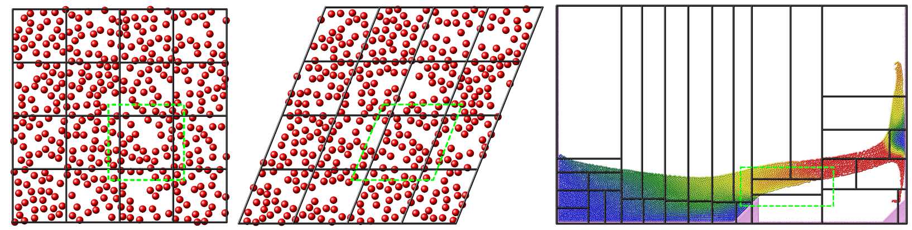
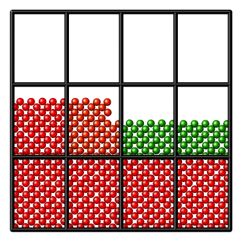
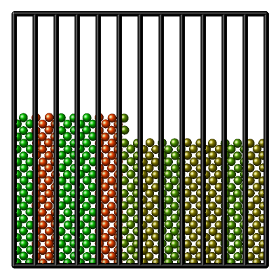
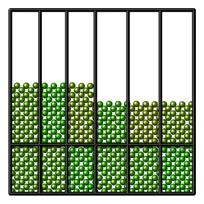
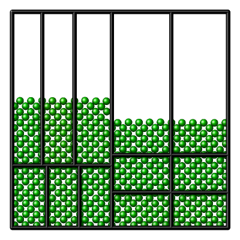

\(\renewcommand{\AA}{\text{Å}}\)
4.4.1. Partitioning
The underlying spatial decomposition strategy used by LAMMPS for distributed-memory parallelism is set with the comm_style command and can be either “brick” (a regular grid) or “tiled”.

Domain decomposition schemes
This figure shows the different kinds of domain decomposition used for MPI parallelization: “brick” on the left with an orthogonal (left) and a triclinic (middle) simulation domain, and a “tiled” decomposition (right). The black lines show the division into subdomains, and the contained atoms are “owned” by the corresponding MPI process. The green dashed lines indicate how subdomains are extended with “ghost” atoms up to the communication cutoff distance.
The LAMMPS simulation box is a 3d or 2d volume, which can be of orthogonal or triclinic shape, as illustrated in the Domain decomposition schemes figure for the 2d case. Orthogonal means the box edges are aligned with the x, y, z Cartesian axes, and the box faces are thus all rectangular. Triclinic allows for a more general parallelepiped shape in which edges are aligned with three arbitrary vectors and the box faces are parallelograms. In each dimension, box faces can be periodic, or non-periodic with fixed or shrink-wrapped boundaries. In the fixed case, atoms which move outside the face are deleted; shrink-wrapped means the position of the box face adjusts continuously to enclose all the atoms.
For distributed-memory MPI parallelism, the simulation box is spatially decomposed (partitioned) into non-overlapping subdomains which fill the box. The default partitioning, “brick”, is most suitable when atom density is roughly uniform, as shown in the left-side images of the Domain decomposition schemes figure. The subdomains comprise a regular grid, and all subdomains are identical in size and shape. Both the orthogonal and triclinic boxes can deform continuously during a simulation, e.g. to compress a solid or shear a liquid, in which case the processor subdomains likewise deform.
For models with non-uniform density, the number of particles per processor can be load-imbalanced with the default partitioning. This reduces parallel efficiency, as the overall simulation rate is limited by the slowest processor, i.e. the one with the largest computational load. For such models, LAMMPS supports multiple strategies to reduce the load imbalance:
The processor grid decomposition is by default based on the simulation cell volume and tries to optimize the volume to surface ratio for the subdomains. This can be changed with the processors command.
The parallel planes defining the size of the subdomains can be shifted with the balance command. Which can be done in addition to choosing a more optimal processor grid.
The recursive bisectioning algorithm in combination with the “tiled” communication style can produce a partitioning with equal numbers of particles in each subdomain.
   
{kind=link}
{kind=link}
{kind=link}
{kind=link}
The pictures above demonstrate different decompositions for a 2d system with 12 MPI ranks. The atom colors indicate the load imbalance of each subdomain, with green being optimal and red the least optimal.
Due to the vacuum in the system, the default decomposition is unbalanced, with several MPI ranks without atoms (left). By forcing a 1x12x1 processor grid, every MPI rank does computations now, but the number of atoms per subdomain is still uneven, and the thin slice shape increases the amount of communication between subdomains (center left). With a 2x6x1 processor grid and shifting the subdomain divisions, the load imbalance is further reduced and the amount of communication required between subdomains is less (center right). And using the recursive bisectioning leads to further improved decomposition (right).